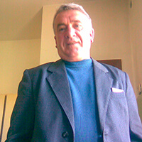
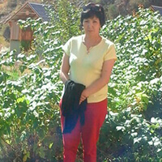
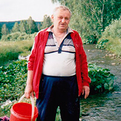
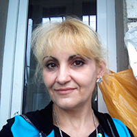
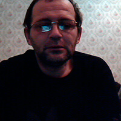

Nota do editor: Segundo as estatísticas, um em cada oito portugueses sofre de várias doenças das articulações (artrose, artrite, ciática). Por um lado, nada mortal, mas ... Primeiro, os pacientes perdem capacidade de viver uma vida normal, começam apenas a existir. E só depois, devido à mobilidade limitada, surgem tais doenças, como hérnia, distúrbios metabólicos e a incapacidade de andar. Nós perguntamos ao doutor de qualificação superior e professor, Miguel Arruda, sobre como se livrar de doenças das articulações e tornar-se uma pessoa saudável
- Olá, Doutor Miguel. Diga-nos, por favor: é verdade que as doenças não fatais como ciática e osteocondrose podem causar doenças mais graves? E é verdade que um em cada oito portugueses está doente?
— Boa tarde, Maria. As pessoas não morrem por conta da artrite e ciática. Mas há uma coisa importante: se você não tratar as articulações e a coluna, dentro de seis meses, surge um monte de doenças. Trata-se da obesidade, da curvatura da coluna, e de distúrbios metabólicos. O pior é que nos últimos estágios, nas articulações podem surgir tumores cancerígenos
Por exemplo, sem tratamento, uma hérnia pode transformar-se num tumor maligno. Sim, é possível ser operado, mas ... São as costas. A pessoa pode tornar-se deficiente.
Falando das estatísticas: infelizmente, mais de 27% da população portuguesa tem artrite ou ciática. E o pior de tudo, é que essa doença tem ficado cada vez “mais jovem”. Dantes geralmente pessoas de acima de 40 anos de idade procuravam o tratamento, mas agora são os jovens que mais frequentam os médicos.
Portanto, se as costas ou articulações começarem a doer-lhe, não jogue culpa no cansaço. É muito provável, que uma dessas doenças atingiu você.
— O que fazer nesta situação?
— Vou responder- começar o tratamento. Mas há dois problemas.
Em primeiro lugar: na maioria dos hospitais, não há cirurgiões reumatológicos que possam diagnosticar e prescrever o tratamento a tempo.
Em segundo lugar, reumatologistas e cirurgiões muitas vezes não tratam o problema a sério, uma vez que essas doenças são consideradas crónicas e não perigosas. Os médicos simplesmente prescrevem géis que aliviam dores e recomendam fazer exercícios. Ou seja, como resultado, o paciente é deixado com o seu problema e dores à sua própria sorte.
Claro, o nosso instituto, eu, pessoalmente, e a minha equipa, tentamos resolver essa situação. Mas, infelizmente, não podemos dar ordens às clínicas regionais e controlar a situação.
Portanto, decidimos seguir um caminho diferente e recentemente fizemos um verdadeiro avanço no quadro do projeto internacional “Não às dores”. Temos certeza de que isso ajudará a mudar a situação no país, bem como ajudará as pessoas a viverem uma vida plena.
— Ou seja, vocês já sabem como resolver o problema?
— Sim, temos. No âmbito do projeto, obtivemos acesso ao primeiro medicamento criado no quadro deste programa – o bio-gel . Dantes este remédio não foi entregue a Portugal, pois não havia permissão, e capacidade de produção necessárias, já que todos os lotes disponíveis do medicamento eram comprados da China e dos Estados Unidos. Conseguimos participar no desenvolvimento e pesquisa da terceira geração deste gel e agora este é fornecido para Portugal também!
— O que quer dizer com o “avanço”? De que remédio se trata?
— O bio-gel “reinicia” o corpo, e lança a regeneração de células danificadas. Ou seja, o remédio elimina a causa de dores, e retorna as articulações e a coluna à norma. Ou seja, como resultado, o paciente não apenas se livra dos sintomas, mas se torna uma pessoa completamente saudável.
A princípio, o gel reinicia o sistema de regeneração do corpo, e alivia simultaneamente dores. Em duas ou três semanas, o tratamento será concluído e, o mais importante, para evitar a recorrência de dores, é necessário repetir o curso de tratamento com o gel.
— O bio-gel ajuda apenas no tratamento de osteoartrite e osteocondrose?
— Não. O remédio ajuda a curar qualquer doença relacionada às doenças das articulações ou da coluna- artrose e artrite, ciática, reumatismo, ciática, deslocamento dos discos vertebrais. Ele também pode ser usado para curar esporões e calos, lesões, fraturas, luxações e muitas outras doenças.
É um remédio muito interessante! Ele de verdade é capaz de livrar de todas as doenças, e não apenas aliviar temporariamente dores?
— Este bio-gel elimina dores (nas fases iniciais do tratamento), e elimina completamente a doença. Agora, este é o único remédio que realmente ajuda.
— Então, o gel pode ser comprado em Portugal? E, a propósito, onde é que é fabricado?
— Sim, agora o bio-gel pode ser comprado em Portugal. Tal foi possível graças ao fato de que nós participamos no projeto e ajudamos a desenvolvê-lo. A empresa fabricante do remédio está localizada em Hong Kong, uma vez que lá se encontra o laboratório e todas as composições necessárias para a fabricação do medicamento.
Além disso, o Ministério da Saúde decidiu participar no programa e compensar o custo do fornecimento do medicamento para cá. Portanto, o bio-gel aqui é mais barato do que em outros países..
— Onde é possível comprar o bio-gel?
— Queríamos lançar uma venda a grande escala nas farmácias do país, mas, infelizmente, as farmácias não querem vender o bio-gel por um preço baixo, e querem ganhar uma grande percentagem das vendas.
Portanto, deixamos do lado essa ideia, e decidimos organizar vendas na Internet para preservar preços acessíveis e dar às pessoas a oportunidade de receber um tratamento de qualidade. Agora é possível comprar o bio-gel no sitio oficial do projeto.
A entrega é efetuada pelo correio, o pagamento se faz após receber o pacote, e para usar o bio-gel, não há necessidade de supervisão especializada - o tratamento é muito simples.
— Doutor Miguel, muito obrigada pela entrevista! Talvez o senhor queira dizer algo aos nossos leitores antes de nós nos despedirmos?
— Sim, claro. Gostava de chamar a atenção dos leitores de que as doenças das costas e das articulações tem ficado “mais jovens”, e mesmo as dores periódicas fracas são uma razão para prestar atenção ao problema. Neste caso, a sua saúde completamente depende de você. O médico não irá pedir-lhe fazer o tratamento. Tudo está em suas mãos.
Além disso, importa recordar que as doenças decorrentes de dores nas costas e nas articulações não trazem apenas desconforto. Eles privam você da vida normal e encurtam a sua vida por 10 ou 15 anos. E com o bio-gel você recuperará esses anos e poderá vive-los normalmente.
— Obrigada, doutor Miguel! Recordamos que nos comentários abaixo vocês podem fazer as suas perguntas ou deixar opiniões sobre o bio-gel .
— P.S.: Depois da entrevista pedimos um favor ao doutor Miguel. E para o leitores do nosso sitio agora há possibilidade de encomendar o bio-gel com um desconto adicional! Para esquecer-se para sempre de doenças, relacionadas às articulações e às costas
Entrevistado por Maria Flores
Imagens de de fontes abertas
Pedro Torres- 2019

Há dezenas de anos eu tentei curar-me da radiculite que não curei a tempo, mas tudo era em vão. Eu decidi experimentar o bio-gel , de que o professor falou, e as minhas dores nas costas passaram em 5 semanas.
Maria- 2019

Doutor Miguel, o bio-gel ajuda com contusões e hematomas? O meu filho tem uma pele fina, e hematomas aparecem o tempo todo.
Miguel Arruda- 2019
Sim, Maria, o gel ajudará com isso. Pode ser usado no caso de lesões, contusões e torções.
Helena Gomes- 2019
Eu já uso este bio-gel há meio ano (uma amiga trouxe-mo da China). Eu curei a artrose em apenas duas semanas e meia, e agora mantenho o gel constantemente no estojo de primeiros socorros, só por precaução.
Marcos - 2019
Eu li o artigo e imediatamente decidi encomendar este gel para experimentar. É que os medicamentos comuns geralmente ajudavam-me por um curto período de tempo, pois a osteocondrose, segundo os médicos diziam-me, era difícil de curar. Agora vou falar dos resultados que obtive. O gel chegou muito rapidamente. Já no primeiro dia de uso eu senti-me tão bem! Senti que devia escrevê-lo aqui. Muito obrigado, agora eu posso viver normalmente!
Sérgio - 2019

Eu li os primeiros comentários e decidi encomendar também. Quando o remédio chegar, vou escrever sobre os resultados.
Natalia Teixeira- 2019
Na farmácia de um amigo meu este bio-gel custa 3 vezes mais caro, e por isso não podia comprá-lo, pois era muito caro para mim. Mas quando vi o preço do remédio aqui, imediatamente encomendei, porque a minha aposentadoria permite. Os esporões nos pés ficam cada diz menor, é só graças a um gel comum.
Miguel Torres- 2019
Obrigado pela sua opinião, Natalia! Você fez a coisa certa, ao ter decidido encomendar o gel no sitio oficial, pois o remédio é vendido apenas ali. Em outro lugar, você podia comprar um falso.
Marta - 2019
Isto é um milagre! Eu já uso este gel há três semanas, e as dores nas costas passaram! Que o seu projeto sempre tenha sorte!
Elaine - 2019
Eu sempre sofri e pensei que não iria livrar-me de dores nos joelhos. Agora acho que vou encomendar este gel, talvez ajude.
Verónica- 2019
Encontrei este artigo por acaso. E o que eu vejo!!! Estão a falar do nosso gel. Bem, não que eu fabrique o gel, mas no sentido de que eu o comprei para o meu marido. Ele não sabe que estou a escrever aqui, mas resolvi compartilhar. É a minha alegria, mesmo a minha maior felicidade! Na altura também li os comentários, o bio-gel pareceu-me confiável, e eu encomendei-o. O meu marido já estava desesperado. Ele tomava pílulas e fazia massagem, por isso teve problemas com o estômago. Portanto, decidimos tentar algo diferente. E então, ele começou a usar este bio-gel e agora não tem nenhuns problemas, ele está novamente ativo!
Raquel - 2019

Tive osteocondrose. Comprei e utilizai o gel e... em 10 dias a doença desapareceu! Graças aos chineses por tal milagre! E parabéns para você, Verónica, por cuidar do seu marido até ele se tornar forte novamente! Continue assim! Atenciosamente, Raquel. E boa sorte a todos!
Tiago - 2019

Eu quero tentar livrar-me da osteocondrose rapidamente e, o mais importante, de alguma forma mais simples e sem dores. Eu acho que este gel é a minha única opção. Muito obrigado pela informação, hoje vou fazer o pedido, e espero que nem todo o estoque tenha sido acabado ainda
Teresa - 2019
O meu marido tem osteocondrose, e vamos à vários médicos. Eu o amo, e daria a minha vida por ele, mas não consigo aliviar o sofrimento dele. Felizmente, apareceu você e a sua história, e para nós apareceu uma esperança. Já experimentamos de tudo.